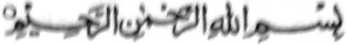
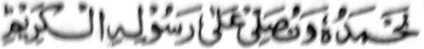
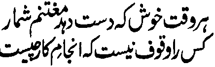

SA INGARAN O ALLAH, LEBI A MASALINGGAGAO, LEBI A MAKALIMO-ON
Pephodin tano Sekaniyan, go pezalawatan tano so Nabi Niyan a pemamasela-an.
Paganay ron, na pephanalamatan aken so Allah, a Sekaniyan so migay raken sa kapakagaga sa kizoraten aken sangka-iya maito a kitab pantag ko Tabligh. So isa ko makalelebi a ‘Alim sangka-iya masa tano imanto na piyando-an ako niyan sa kapamili aken sa pira timan a Ayaat ko Qur’an ago so saba-ad ko manga katharo o Nabi (Sallallaho ‘Alaihi Wasallam) pantag ko Tabligh taros a osain aken siran. Sabap sa so maito a kakhidmat aken sangkanan a manga thotolabos a manga miyamaratiyaya na aya khasabapan sa kapethagompiya ko, na iphalad aken angka-iya maito a kitab a mala-i gona ko omani paganadan ko Islam, go so manga ompongan ko Agama, go so manga parinta o Islam, go so langon o pithanggisa-an a Muslim, na phangeni naken kiran a kanggalebeka iran ko Tabligh ko okit iran. Aya mata-an, na sangka-iya a masa na oman gawi-i na gi-i ndarodos so panamar tano ko agama na so katatapelisa ko titho a paratiyaya na kena ba aya bo a kiyapo-onan niyan na so manga Kafir ka si-i den miyakapo-on ko manga tao a bebethowan niran a ginawa iran sa manga Muslim. So manga Fardh ago so manga Wajib na inibagak o kena ba bo so kalilid a Muslim, ka so pen so aden a manga daradat iyan kiran. Million million a manga Muslim a misasa-onek siran ko ribat a paratiyaya, liyo pen ko kinibagaken niran ko Sambayang ago so Powasa; go di iran ma-iinengka so mao-ola ola iran a masosopak iyan so titho a pangongonotan ko Allah. So kaphelawani ko takes o Agama na tanto a domadayamang, go so gi-i kazoman-somana ko Agama na mimbaloy a dadabi-atan. Giya-i sabap a so manga Olama na inikagowad iran so kalilid a pagtao, sa aya mini-onga angka-iya a mao-ola-ola na baden gi-i pagomareg so kapekhada o kenal ko ‘enda-o o Islam. Aya idada-owa o manga tao na da-a a makaphangenda-o kiran ko Agama Islam a titho a thotomangked, go so mambo so manga Olama na aya idada-owa iran na da- a phamakineg kiran phiya-piya. Ogaid na da den sangkanan a manga da-owa a ba tharima-a o Allah. Aya mata-an na, di Niyan den tarima-an so da-owa o madakel a tao pantag o kada-a a meleng iran ko Agama, sabap sa so kapaganada ko Agama go so kaperomasay ko kakenala ko manga okit iyan na paliyogat ko omani Muslim. Sabap sa so “kada-o sabot ko bitikan” na di khabaloy a dalina ko apiya antona-a parinta, na anda manaya mambo-i katharima-a on o Kadenan o manga dato? Pitharo iran a so kada-owa-a ko kanggalebek sa marata na lebi pen a karata iyan a di so galebek a marata. Sakamaoto mambo, a so kida-owa-an o manga Olama sa da-a phamakineg kiran na da-a a bager iyan. Ipephangandag iran a kititindegen niran ko manga ala a olowan ko Agama ago so manga Auliya ko miyanga o-ona, ogaid na da iran pikira so kadakel o maregen ago ringasa a kiyasagadan niran (a miyanga o-ona) ko giran kipanolonen ko Agama ontol. Ino ba siran da malebad a wator? Ino ba siran da maringasa ago kapangarasi-i si-i ko pithamanan a maregen? Ogaid na makim pen angka-iya a manga pangalang ago manga reregen, na minitoman niran so galebek iran pantag ko kapanolon, ago piyakalangkap iran so pananawag o Islam apiya antona-ai sopaka iran.
Aya kalalayaman na so manga Muslim na tiyaman niran so Tabligh si-i bo ko manga Olama, a aya mata-an na so manga Muslim na siyogo siran o Allah ko kisaparen niran ko manga tao ko kanggalebek sa inisapar. O aya tarima-a tano pasin a so Tabligh na aya bo a khigalebekon na so manga Olama a di ran bo penggalebeken phiya-piya, na miyatangked a so omani Muslim na galebek iyan so kipanolonen ko Islam. So osayan o Qur’an ago so Hadith ko Tabligh, na kharinayag bo ko manga Ayaat sa Qur’an ago so manga katharo o Rasulollah (Sallallaho ‘Alaihi Wasallam) a pagalowin bo si-i ko phamakatondog si-i a manga lekatan. Giyoto-i sabap a di ngka khatamanan so Tabligh sa ba rek bo o manga Olama, o di na ba mabaloy a dao-wa ngka sa kibagaken ka on. Phangeni naken ko manga Muslim a senggay ran sa oras ago galebek so Tabligh ko pithamanan a khagaga iran.

Itongen ka sa limo, so masa a tangan ka sabap sa da a mata-o ron ko khaposan non.
Kena ba kailangan a kabaloy ngka a tarotop a ‘Alim ko kiphanolonen ka ko Islam ago so manga pipiya ola-ola ko manga manosiya. Saden sa maito a sowa-a ka ko Islam, na sampain ka ko manga ped. Igira aden a marata a gi-i manggola-ola ko danga ka na, so kababaloy ngka a Muslim, na galebek ka so karena ngka ko malawani, si-i ko taman a khagaga ngka. Inosay aken so manga ala-i gona a nganin ko Tabligh sa makampet si-i ko pito a pinto-an, sa arap aken a so omani Muslim na makanggay a gona kiran.